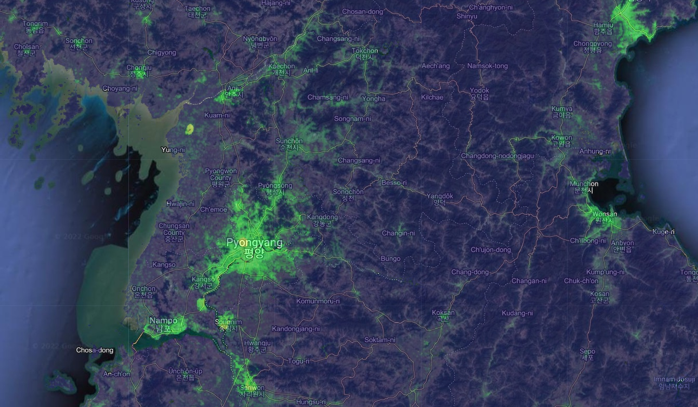
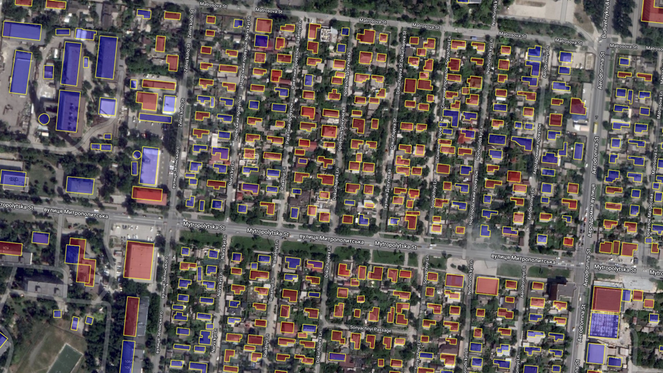
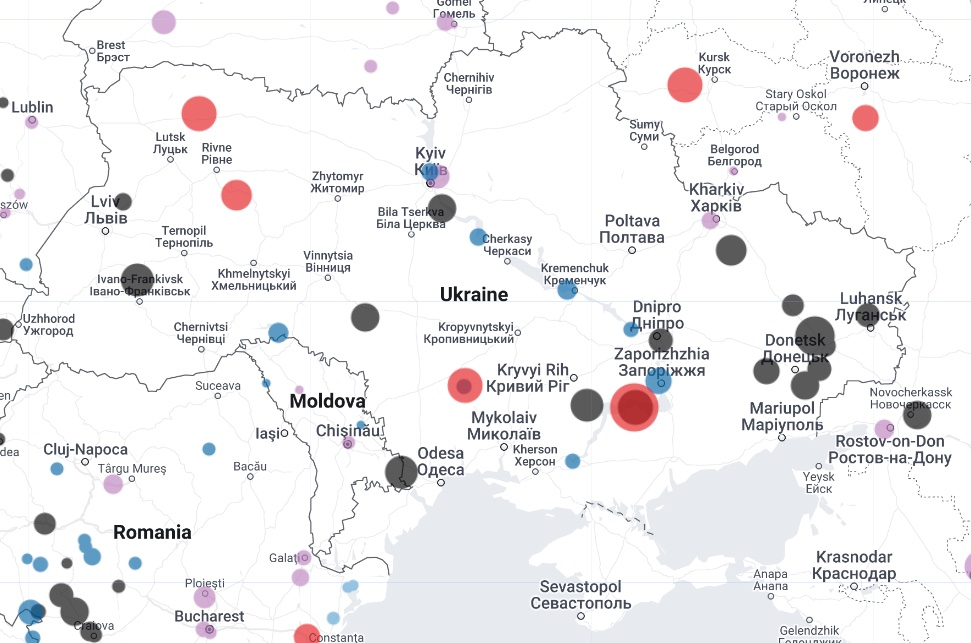

%%{init: {'theme': 'base', 'themeVariables': { 'primaryColor': '#FFFFFF' ,'primaryBorderColor':'#000000' , 'lineColor':'#009933'}}}%%
flowchart
A(Does it happen outside?)
A--> B(Yes)
A--> C(No)
D(Is it very small?)
B-->D
E(Yes)
F(No)
D-->F
D-->E
G(Use optical satellite imagery)
H(Don't use optical satellite imagery)
E-->H
F-->G
C-->H
Data Acquisition
One of the main advantages of GEE is that it hosts several Petabytes of satellite imagery and other spatial data sets, all in one place. Among these are many that could prove useful to those investigating illegal mining and logging, estimating conflict-induced damage, monitoring pollution from extractive industries, conducting maritime surveillance without relying on ship transponders, verifying the locations of artillery strikes, tracking missile defense systems and many other topics.
This section highlights ten categories of geospatial data available natively in the GEE catalog, ranging from optical satellite imagery, to atmospheric data, to building footprints. Each sub-section provides an overview of the given data type, suggests potential applications, and lists the corresponding datasets in the GEE catalog. The datasets listed under each heading are not an exhaustive list– there are over 500 in the whole catalog, and the ones listed in this section are simply the ones with the most immediate relevance to open source investigations. If a particular geospatial dataset you want to work with isn’t hosted in the GEE catalog, you can upload your own data. We’ll cover that in the next section.
Optical Imagery

Optical satellite imagery is the bread and butter of many open source investigations. It would be tough to list off all of the possible use cases, so here’s a handy flowchart:
This is, of course, a bit of an exaggeration. But if you’re interested in a visible phenomenon that happens outdoors and that isn’t very small, chances are an earth-observing satellite has taken a picture of it. What that picture can tell you naturally depends on what you’re interested in learning. For a deeper dive into analyzing optical satellite imagery, see the subsection on multispectral remote sensing..
There are several different types of optical satellite imagery available in the GEE catalog. The main collections are the Landsat and Sentinel series of satellites, which are operated by NASA and the European Space Agency, respectively. Landsat satellites have been in orbit since 1972, and Sentinel satellites have been in orbit since 2015. Norway’s International Climate and Forest Initiative (NICFI) has also contributed to the GEE catalog by providing a collection of optical imagery from Planet’s PlanetScope satellites. These are higher resolution (4.7 meters per pixel) than Landsat (30m/px) and Sentinel-2 (10m/px), but are only available for the tropics. Even higher resolution imagery (60cm/px) is available from the GEE catalog from the National Agriculture Imagery Program, but it is only available for the United States. For more details, see the “Datasets” section below.
Applications
- Geolocating pictures
- Some of Bellingcat’s earliest work involved figuring out where a picture was taken by cross-referencing it with optical satellite imagery.
- General surveillance
- Monitoring Chinese missile silo construction.
- Amassing evidence of genocide in Bucha, Ukraine
- Damage detection
- Verifying the locations of artillery/missile/drone strikes
- The 2019 attack on Saudi Arabia’s Abqaiq oil processing facility.
- Monitoring illegal mining/logging
- Global Witness investigation into illegal mining by militias in Myanmar.
- Tracking illegal logging across the world.
Datasets
| Sensor | Timeframe | Resolution | Coverage |
|---|---|---|---|
| Landsat 1-5 | 1972–1999 | 30m | Global |
| Landsat 7 | 1999–2021 | 30m | Global |
| Landsat 8 | 2013–Present | 30m | Global |
| Landsat 9 | 2021–Present | 30m | Global |
| Sentinel-2 | 2015–Present | 10m | Global |
| NICFI | 2015-Present | 4.7m | Tropics |
| NAIP | 2002-2021 | 0.6m | USA |
Radar Imagery

Synthetic Aperture Radar imagery (SAR) is a type of remote sensing that uses radio waves to detect objects on the ground. SAR imagery is useful for detecting objects that are small, or that are obscured by clouds or other weather phenomena. SAR imagery is also useful for detecting objects that are moving, such as ships or cars.
Applications
- Change/Damage detection
- Tracking military radar systems
- Maritime surveillance
- Monitoring illegal mining/logging
Datasets
| Sensor | Timeframe | Resolution | Coverage |
|---|---|---|---|
| Sentinel 1 | 2014-Present | 10m | Global |
Nighttime Lights

Satellite images of the Earth at night are a useful proxy for human activity. The brightness of a given area at night is a function of the number of people living there and the nature of their activities. The effects of conflict, natural disasters, and economic development can all be inferred from changes in nighttime lights.
The timelapse above reveals a number of interesting things: The capture of Mosul by ISIS in 2014 and the destruction of its infrastructure during the fighting (shown as the city darkening), as well as the liberation of the city by the Iraqi military in 2017 are all visible in nighttime lights. The code to create this gif, as well as a more in-depth tutorial on the uses of nighttime lights, can be found in the “War at Night” case study.
Applications
- Damage detection
- Identifying gas flaring/oil production
- Identifying urban areas/military bases illuminated at night
Datasets
| Sensor | Timeframe | Resolution | Coverage |
|---|---|---|---|
| DMSP-OLS | 1992-2014 | 927m | Global |
| VIIRS | 2014-Present | 463m | Global |
Climate and Atmospheric Data

Climate and atmospheric data can be used to track the effects of conflict on the environment. The European Space Agency’s Sentinel-5p satellites measure the concentration of a number of atmospheric gasses, including nitrogen dioxide, methane and ozone. Measurements are available on a daily basis at a fairly high resolution (1km), allowing for the detection of localized sources of pollution such as oil refineries or power plants. For example, see this Bellingcat article in which Wim Zwijnenburg and I trace pollution to specific facilities operated by multinational oil companies in Iraq.
The Copernicus Atmosphere Monitoring Service (CAMS) provides similar data at a lower spatial resolution (45km), but measurements are available on an hourly basis. The timelapse above utilizes CAMS data to show a sulfur dioxide plume resulting from an ISIS attack on the Al-Mishraq Sulphur Plant in Iraq. The plant was used to produce sulphuric acid, for use in fertilizers and pesticides. The attack destroyed the plant, causing a fire which burned for a month and released 21 kilotons of sulfur dioxide into the atmosphere per day; the largest human-made release of sulfur dioxide in history.
Applications
- Monitoring of airborne pollution
- Tracing pollution back to specific facilities and companies
- Visualizing the effects of one-off environmental catastrophes
- Nordstream 1 leak
- ISIS setting Mishraq sulphur plant on fire
Datasets
| Sensor | Timeframe | Resolution | Coverage |
|---|---|---|---|
| CAMS NRT | 2016-Present | 44528m | Global |
| Sentinel-5p | 2018-Present | 1113m | Global |
Mineral Deposits

Mining activities often play an important role in conflict. According to an influential study, “the historical rise in mineral prices might explain up to one-fourth of the average level of violence across African countries” between 1997 and 2010. Data on the location of mineral deposits can be used to identify areas where mining activities are likely to be taking place, and several such datasets are available in Google Earth Engine.
Applications
- Monitoring mining activity
- Identifying areas where mining activities are likely to be taking place
- Mapping the distribution of resources in rebel held areas in conflicts fueled by resource extraction
Datasets
| Sensor | Timeframe | Resolution | Coverage |
|---|---|---|---|
| iSDA | 2001-2017 | 30m | Africa |
Fires

Earth-observing satellites can detect “thermal anomalies” (fires) from space. NASA’s Fire Information for Resource Management System (FIRMS) provides daily data on active fires in near real time, going back to the year 2000. Carlos Gonzales wrote a comprehensive Bellingcat article on the use of FIRMS to monitor war zones from Ukraine to Ethiopia. The map above shows that FIRMS detected fires over Eastern Ukraine trace the frontline of the war.
FIRMS data are derived from the MODIS satellite, but only show the central location and intensity of a detected fire. Another MODIS product (linked in the table below) generates a monthly map of burned areas, which can be used to assess the spatial extent of fires.
Applications
- Identification of possible artillery strikes/fighting in places like Ukraine
- Environmental warfare and “scorched earth” policies
- Large scale arson
Datasets
| Sensor | Timeframe | Resolution | Coverage |
|---|---|---|---|
| FIRMS | 2000-Present | 1000m | Global |
| MODIS Burned Area | 2000-Present | 500m | Global |
Population Density Estimates

Sometimes, we may want to get an estimate of the population in a specific area to ballpark how many people might be affected by a natural disaster, a counteroffensive or a missile strike. You can’t really Google “what is the population in this rectangle I’ve drawn in Northeastern Syria?” and get a good answer. Luckily, there are several spatial population datasets hosted in GEE that let you do just that. Some, such as WorldPop, provide estimated breakdowns by age and sex as well. However, it is extremely important to bear in mind that these are estimates, and will not take into account things like conflict-induced displacement. For example, Oak Ridge National Laboratory’s LandScan program has released high-resolution population data for Ukraine, but this pertains to the pre-war population distribution. The war has radically changed this distribution, so these estimates no longer reflect where people are. Still, this dataset could be used to roughly estimate displacement or the number of people who will need new housing.
Applications:
- Rough estimates of civilians at risk from conflict or disaster, provided at a high spatial resolution
Datasets
| Sensor | Timeframe | Resolution | Coverage |
|---|---|---|---|
| Worldpop | 2000-2021 | 92m | Global |
| GPW | 2000-2021 | 927m | Global |
| LandScan | 2013–Present | 100m | Ukraine |
Building Footprints

A building footprint dataset contains the two dimensional outlines of buildings in a given area. Currently, GEE hosts one building footprint dataset which covers all of Africa. In 2022, Microsoft released a free global building footprint dataset, though to use it in Earth Engine you’ll have to download it from their GitHub page and upload it manually to GEE. The same goes for OpenStreetMap (OSM), a public database of building footprints, roads, and other features that also contains useful annotations for many buildings indicating their use. Benjamin Strick has a great youtube video on conducting investigations using OSM data.
Applications:
- Joining damage estimate data with the number of buildings in an area
Datasets
| Dataset | Timeframe | Coverage |
|---|---|---|
| Open Buildings | 2022 | Africa |
Administrative Boundaries

Spatial analysis often has to aggregate information over a defined area; we may want to assess the total burned area by province in Ukraine, or count the number of Saudi airstrikes by district in Yemen. For that, we need data on these administrative boundaries. GEE hosts several such datasets at the country, province, and district (or equivalent) level.
Applications
- Quick spatial calculations for different provinces/districts in a country
- e.g. counts of conflict events by district over time
Datasets
| Dataset | Timeframe | Coverage |
|---|---|---|
| FAO GAUL | 2015 | Global |
Global Power Plant Database

The Global Power Plant Database is a comprehensive, open source database of power plants around the world. It centralizes power plant data to make it easier to navigate, compare and draw insights. Each power plant is geolocated and entries contain information on plant capacity, generation, ownership, and fuel type. As of June 2018, the database includes around 28,500 power plants from 164 countries. The database is curated by the World Resources Institute (WRI).
Applications:
- Analyzing the impact of conflict on critical infrastructure.
- e.g. fighting in Ukraine taking place around nuclear power facilities.
- Could be combined with the atmospheric measurements of different pollutants and the population estimates data to assess the impact of various forms of energy generation on air quality and public health.
Datasets
| Dataset | Timeframe | Coverage |
|---|---|---|
| GPPD | 2018 | Global |